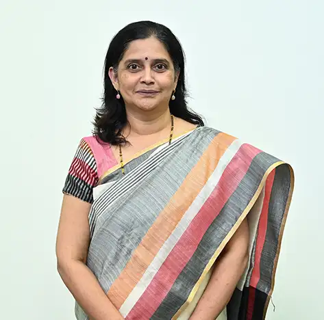

Prof. Anuradha Chetan Phadke
Associate Professor

Associate Professor
Dr. Anuradha Chetan Phadke holds a Ph.D. degree in Computer Vision, and received BE and ME degrees in Electronics from Walchand College of Engineering, Sangli, India in 1993 and 1995 respectively. She is presently working as Associate Professor and Associate Head at the School of Electronics and Communication Engineering, Dr. Vishwanath Karad Maharashtra Institute of Technology World Peace University. She has authored two books, granted one patent, published and presented several papers in indexed Journals and conferences, and has contributed to the initiation, development, and up-gradation of elective subject Laboratories in VLSI Design, Embedded Systems, Image processing, and Machine Learning.
Image Processing, Machine Learning, Embedded System Design Publication 1.Vrushali Pagire, Anuradha C. Phadke, “Underwater Fish Detection and Classification using Deep Learning”, International Conference on Intelligent Controller and Computing for Smart Power, 2022, July 21st -23rd, 2022 Hyderabad, India, DOI: 10.1109/ICICCSP53532.2022.9862410, 25 August 2022 2.Vaibhav Bahel, Tejas Khare, Anuradha C. Phadke, “PCB-Fire: Automated classification and fault detection in PCB”, IEEE Third International Conference on “Multimedia Processing, Communications and Information Technology” MPCIT-2020, hosted by J. N. N. College of Engg., Shivamogga, Karnataka on 11-12 Dec. 2020, 16 February 2021, DOI: 10.1109/MPCIT51588.2020.9350324 3. Subrata Kumar Das, Pranjal Joshi, Rohit Kokitkar, U V Murali Krishna, Anuradha C. Phadke, "Detection of cloud boundaries from scanning Ka-band radar measurements using digital image processing technique", IEEE Journal of Selected Topics in Applied Earth Observations and Remote Sensing, Vol. 14, pp 1848 – 1856, DOI: 10.1109/JSTARS.2020.3042868, 17 December 2020 4. Anuradha C Phadke, Priti P Rege, “Algorithms for Detection and Classification of Abnormality in Mammograms: An Overview”. In: Chittaranjan Pradhan, Himansu Das, Bighnaraj Naik and Nilanjan Dey (eds) Handbook of Research on Information Security in Biomedical Signal Processing, pp. 255-280, Apr 2018, IGI Global 5. Anuradha C Phadke, Priti P Rege, “Fusion of Local and Global Features for Classification of Abnormality in Mammograms”, Springer Sadhana - Academy Proceedings in Engineering Science, Vol. 41 No. 4, pp 385-395, April 2016, DOI 10.1007/s12046-016-0482-y 6. Anuradha C Phadke, P. P Rege, “Comparison of SVM & ANN Classifier for Mammogram classification Using ICA features”, Future Information Engineering Volume I, WIT Transaction on Information and Communication Technologies, Vol. 49, pp. 499-506, 2014 WIT press, Doi: 10.2495/ ICIE20130581 Google Scholar link https://scholar.google.com/citations?hl=en&user=N3l-S3wAAAAJ&view_op=list_works Scopus Link https://www.scopus.com/authid/detail.uri?authorId=35766876000 Orcid Link https://www.scopus.com/authid/detail.uri?authorId=35766876000
Profiles